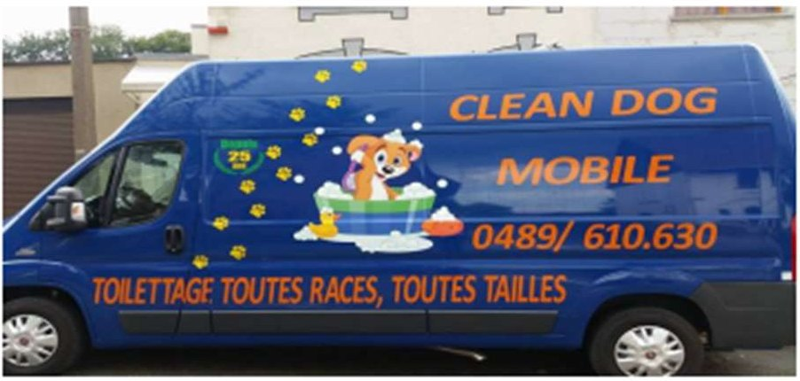

Toilettage complet
Un toilettage adapté aux besoins de votre chien, à discuter lors de la prise de rendez-vous.
Toilettage canin mobile · Région de Tubize
Alexandre Koch, toiletteur canin indépendant depuis 1993, se déplace avec sa camionnette spécialement aménagée pour prendre soin de votre compagnon.

Les prestations principales
Toilettage complet, bain et séchage, coupe des ongles et nettoyage des oreilles.
Un toilettage adapté aux besoins de votre chien, à discuter lors de la prise de rendez-vous.

Le bain et le séchage font partie des prestations proposées par Clean Dog Mobile.

La coupe des ongles peut être réalisée lors de la séance de toilettage.
Le nettoyage des oreilles fait également partie des soins proposés.
Une prise en charge personnalisée
La camionnette spécialement aménagée vient devant votre domicile. Alexandre prend en charge un seul chien à la fois et travaille avec douceur, patience et dans le respect du bien-être de l'animal.
Pourquoi choisir Clean Dog Mobile ?Une tarification expliquée à l'avance
Le tarif dépend notamment de la race, de la taille, du type et de l'état du poil ainsi que du travail demandé. Le prix est annoncé lors de la prise de rendez-vous.
Une question ? Un rendez-vous ?
Les rendez-vous se prennent exclusivement par téléphone.